Building Lemnos
Everything you need for the small Lemnos board (144 LEDs/m strip), its controllers and displays, and the optional radio, and how to put it all together.
Prices checked October 26, 2026, and they will probably have changed by the time you read this. These are not affiliate links or endorsements, just the parts I used or the closest things I could find. Generic parts from any seller will do.
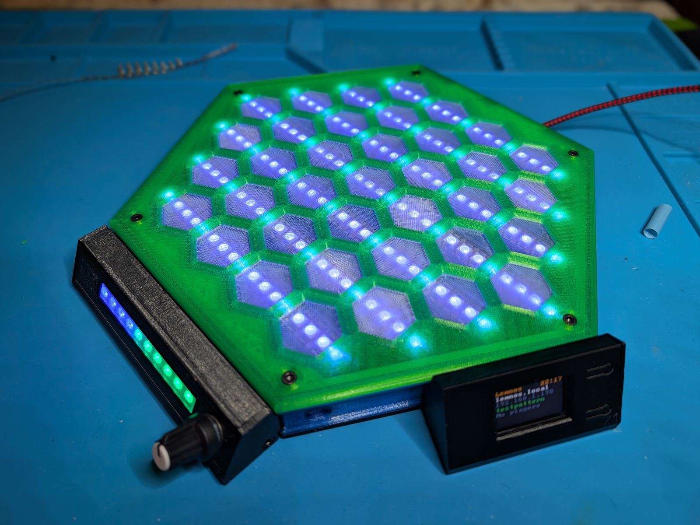
The small board, with a Standard Controller docked on the left and the Radio Case on the right.
Six slots
The board has six slots around its edge, and each one holds a Standard Controller, a Basic Display, or the Radio Case. Decide what goes in them before you buy anything, because most of the parts list is per slot.
- Standard Controller: a knob (with a push switch) and a button, with the player’s own 10-light bar built in.
- Basic Display: the same housing with the bar and no controls, for a player using a switch, a pedal, a Bluetooth controller, or a phone. Everyone needs their bar in front of them, whatever they play with.
- Radio Case (optional): holds a LilyGO T-Display, the ESP32 that adds Bluetooth controllers, phones, the settings page, and the time of day. It takes one slot, so with it there’s room for five controllers and displays. Any other ESP32 can go inside the board instead, which leaves all six slots free.
Every controller and display is tethered to its own slot. It pulls out to wherever its player sits and pushes back in until the magnets catch, so the whole thing packs away as one piece with no loose parts. You only fill the slots you’ll use, and you can add more later.
What it costs
Pretty much everything comes in packs much bigger than one board needs. If you buy every pack for the board plus a Standard Controller and a Basic Display, it comes to about $103, plus shipping on the SCORPIO, and the radio is another $16. The parts that actually end up in the board come to about $26.90, plus about $4.40 for each Standard Controller and $1.30 for each Basic Display, so a board with two of each is about $38, and the rest goes in your parts bin. The same packs cover up to five Standard Controllers (the buttons come in fives), and the two LED rolls cover the island and 13 bars.
Parts
The board
| Part | Listing | Use | Pack | Pack price | Each | Per unit |
|---|---|---|---|---|---|---|
| MicrocontrollerPlus shipping | Adafruit Feather RP2040 SCORPIO | 1 | 1 | $14.50 | $14.50 | $14.50 |
| WS2812B LED strip, 144 LEDs/m, 5 VTwo rolls: the island alone is 155 LEDs; what's left covers 13 bars | SEZO WS2812B ECO, two 1 m rolls | 155 | 2 m | $21.98 | $10.99/m | $11.83 |
| Heat-set inserts, M3 × 4 and M2 × 26 M3 x 4 for the risers and 2 M2 x 2 for the SCORPIO, whose holes are only 3 mm deep | Pofsnnx M2-M6 assortment, 350 pcs | 8 | 350 | $9.99 | $0.03 | $0.23 |
| Screw kit, M2-M5 socket heads6 M3 x 8 for the Cover and 2 M2 x 4 for the SCORPIO | BESARME 2024-piece, 12.9 alloy steel | 8 | 460 | $12.99 | $0.03 | $0.23 |
| 325 paracordThe island's tether, 3 conductors; the displays and radio use the same spool | 2.7 mm, 100 ft | ~30 cm | 100 ft | $9.99 | $0.33/m | $0.10 |
| 8 × 3 mm magnetsCounted with each controller, display and the radio | 100-pack | pack | 100 | $9.99 | $0.10 | – |
| Total | $79.44 | $26.88 | ||||
Each Standard Controller
| Part | Listing | Use | Pack | Pack price | Each | Per unit |
|---|---|---|---|---|---|---|
| EC11 rotary encoder with push switch | WWZMDiB 6-pack | 1 | 6 | $8.88 | $1.48 | $1.48 |
| 12 mm momentary push button | Gebildet prewired, 5-pack | 1 | 5 | $7.99 | $1.60 | $1.60 |
| 550 paracordFits the 7 conductors | Amazon Basics Type III, 100 ft | ~15 cm | 100 ft | $6.29 | $0.21/m | $0.03 |
| LED strip, 10 LEDsAlready bought | From the board's rolls | 10 | – | – | – | $0.76 |
| 8 × 3 mm magnetsAlready bought; 2 in the unit, 2 in its slot | From the magnet pack | 4 | – | – | – | $0.40 |
| M3 inserts and M3 × 8 screwsAlready bought; 2 of each | From the board's packs | 2 | – | – | – | $0.11 |
| Total | $23.16 | $4.39 | ||||
Each Basic Display
| Part | Listing | Use | Pack | Pack price | Each | Per unit |
|---|---|---|---|---|---|---|
| 325 paracordHolds up to 4 conductors | From the board's spool | ~15 cm | – | – | – | $0.05 |
| LED strip, 10 LEDsAlready bought | From the board's rolls | 10 | – | – | – | $0.76 |
| 8 × 3 mm magnetsAlready bought; 2 in the unit, 2 in its slot | From the magnet pack | 4 | – | – | – | $0.40 |
| M3 inserts and M3 × 8 screwsAlready bought; 2 of each | From the board's packs | 2 | – | – | – | $0.11 |
| Total | – | $1.33 | ||||
Radio (optional)
| Part | Listing | Use | Pack | Pack price | Each | Per unit |
|---|---|---|---|---|---|---|
| ESP32 radioNot the T-Display-S3 | LILYGO T-Display (ESP32) | 1 | 1 | $16.00 | $16.00 | $16.00 |
| 325 paracord4 conductors | From the board's spool | ~15 cm | – | – | – | $0.05 |
| 8 × 3 mm magnetsAlready bought; 1 in the case, 1 in its slot | From the magnet pack | 2 | – | – | – | $0.20 |
| M3 insert and M3 × 8 screwAlready bought | From the board's packs | 1 | – | – | – | $0.06 |
| Total | $16.00 | $16.31 | ||||
Optional
| Part | Listing | Use | Pack | Pack price | Each | Per unit |
|---|---|---|---|---|---|---|
| Pairing button, for an ESP32 inside the boardAny momentary button works: adapt the hole in the CAD to whatever you have, or drill it after you print | A spare from the 12 mm button pack | 1 | – | – | – | $1.60 |
| Barrel jack, M11 × 1 threaded panel mountOnly if you'd rather not power it through the SCORPIO's USB-C | 5.5 x 2.1 mm, 6 sets | 1 | 6 | $9.97 | $1.66 | $1.66 |
| Total | $9.97 | $3.26 | ||||
Hardware
| Part | Qty | Where |
|---|---|---|
| 8 × 3 mm disc magnetsGeneric, like these | 4 per unit | 2 in each controller or display and 2 in its slot on the board; 1 and 1 for the Radio Case |
| M3 brass heat-set inserts | 6 + 2 per unit | 6 in the Base’s risers, 2 in each controller or display Body, 1 in the Radio Case |
| M3 × 8 (or longer) socket head screws | 6 + 2 per unit | Cover to Base (6), each controller or display (2), Radio Case (1) |
| M2 × 2 brass heat-set inserts | 2 | SCORPIO mount |
| M2 × 4 socket head screws | 2 | SCORPIO to its mount |
| 550 paracord | per Standard Controller | Tether jacket; it’s the size that fits 7 conductors |
| 325 paracord | per display or radio, and the island | Tether jacket; holds up to 4 conductors |
From your shop
- 22 AWG stranded wire, for the internal wiring and the tethers. A few colors makes things easier.
- A USB-C phone charger and cable, to power the board through the SCORPIO. It draws well under 2 A at the default brightness.
- DuPont connectors and header pins. Everything inside connects on DuPonts, so any part can come back out.
- Something to join several 5 V and ground wires. Mine is a DuPont socket with all its pins soldered together; Wago 221 lever nuts work too.
- Solder, and some small heat-shrink tubing.
- Hot glue, to hold the island’s tether to the Strip Carrier.
- Waxed lacing cord, for the whippings and the lashes at the tie-off points. Zip ties work too, but lacing is nicer.
- Super glue, a drop under each magnet.
- PETG: about 390 g for the full set, with clear PETG for the Tiles and Windows.
Build guide
The photos are from my own build. The other pictures are made from the CAD model: a render on the left and an exploded drawing with a parts list on the right (click either one to see it bigger). The parts you’re adding in that step are gray, and the ones you’ve already put together are in color. There’s also a printable PDF of this page, with just the drawings and photos.
The photos are from my own build, and the drawings are made from the CAD model. Each drawing shows the parts that step adds, pulled apart along the way they go together, with a parts list. The latest version of this guide, with color renders, is at thunderbirdlabs.com/lemnos-build.html, and the files are on MakerWorld (makerworld.com/en/models/3498867) and GitHub (github.com/tbirdlabs/lemnos).
Like Clotho, most of this should make sense once the parts are in your hands. The wrong parts won’t fit, and the board’s test pattern tells you right away if the wiring is off. The wiring reference on GitHub has the full pin tables.
Tools
- A soldering iron, with a tip for heat-set inserts if you have one
- Wire strippers and flush cutters
- A heat gun or lighter, for the heat-shrink
- A crimper for DuPont terminals (mine is a PR-3254, for 26 to 18 AWG)
- Scissors, for the paracord and the lacing cord
- Allen keys for M2 and M3
- A computer with a USB-C cable, to load the software
- Optional but nice: a multimeter, to check 5 V and ground before anything gets plugged in
Printing
- What to print. The board once: Base, Cover, Skirt, Strip Carrier, and 37 Tiles. For each Standard Controller: Body, Left Endcap, Right Endcap, Slider, and Window. For each Basic Display: its own Left Endcap and Slider, plus a Body, Right Endcap, and Window from the Standard Controller. The Radio Case (Body and Endcap) if you’re using a T-Display.
- Bed size. Every part fits a 250 × 210 mm bed: the standard Prusa bed (MK3/S/+, MK4/S, Core One/+, and so on) and any current Bambu Lab printer except the A1 mini. The board parts are 233 × 202 mm.
- Tiles and Windows. The Tiles are 1.5 mm thick, and clear PETG (SUNLU Clear PETG) works great. White should be fine too, but print one tile in your filament and check it over a lit LED before printing all 37. The Windows go in the same clear filament.
- Settings. It’s a game board, so print it however you like. The print profile uses PETG, 0.20 mm layers, 5 walls, 5 top and bottom layers, 25% adaptive cubic infill, and tree supports where needed, but I overbuild everything. The full set takes about 18 hours.
Inserts
Inserts are optional. The hole sizes are parameters in the CAD (cover_hole_diameter for the M3s and feather_hole_diameter for the M2s), so you can size them down to slightly under the screw’s major diameter, a little under 3 mm for M3 or 2 mm for M2, and thread the screws straight into the plastic.
- Heat-set the 6 M3 inserts into the risers in the Base, and the 2 M2 inserts for the SCORPIO.


The six M3 inserts go in the risers around the edge; the two M2 inserts go in the SCORPIO mount at the back.
Island LEDs
- Cut the strip into 7 rows of 17, 21, 25, 29, 25, 21, and 17 LEDs. Each row has 3 LEDs per hex and one between hexes. You can lay the strip in the Strip Carrier to measure each row instead of counting.
- Stick the rows into the Strip Carrier with the strip’s own adhesive. The carrier doubles as the assembly jig.


Seven rows, one per channel. The wiring between the rows isn’t in the model.
- Join the rows end to end in a serpentine: the end of each row loops back to the same end of the next, so the data runs along one row, back along the next, and so on. Watch the arrows on the strip; data only flows one way.
- Data can go in at any corner. Note which one; you’ll set it as
ISLAND_STARTinconfig.py. - The top is tethered to the Base like the controllers are, so the board can come apart and go back together without touching its wiring. Make a 325 tether with 3 conductors (5 V, ground, and data; see How to make a paracord tether) and solder it to the input end of the first row. The Strip Carrier has no clamp or tie-off point, so it can print flat with no supports; hot-glue the tether and its wires to the underside of the carrier instead.
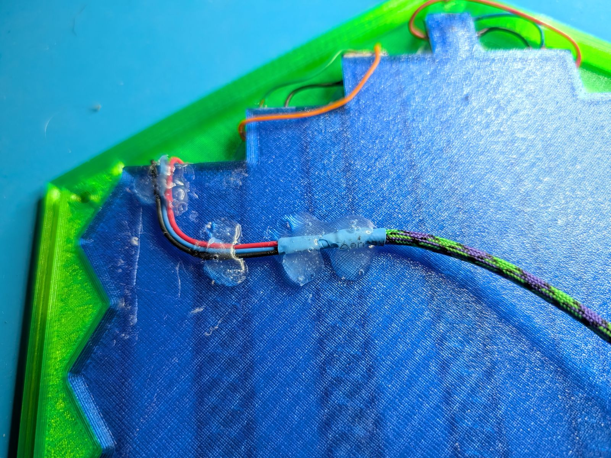
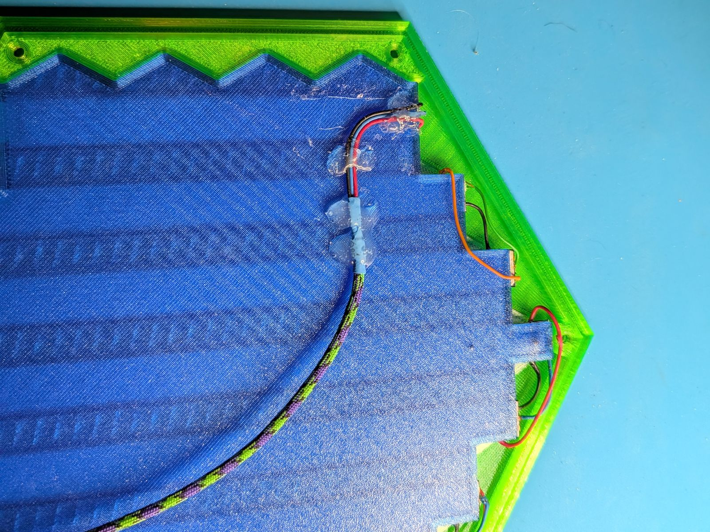
The island tether, hot-glued to the underside of the Strip Carrier. Its wires run around the edge to the first row.
Controllers and displays
The Standard Controller and the Basic Display go together the same way. The Basic Display just has its own Slider and Left Endcap, and no encoder or button. Where the two differ, the Basic Display’s picture is right under the controller’s.
- Heat-set the 2 M3 inserts into the ends of the Body.


One insert in each end of the Body.
- Press the 2 magnets into the back of the Body, with a drop of super glue under each.


The back of the Body, the side that docks against the board.
- Stick the 10-LED strip into the Body with LED 1 at the player’s left as they face the board.


- Fit the Window and the encoder into the Slider from its back, and fasten the encoder with its matching nut (not shown).


Standard Controller: the Window and the encoder both go in from the back of the Slider.


Basic Display: just the Window.
- Push the button into the Left Endcap and fasten it with its matching nut (not shown). The Basic Display skips this step.


The button goes in from the outside of the Left Endcap.
- Wire the left end. Trim the tether’s 5 V, ground, and LED data wires and solder them to the left end of the LED strip. In a Standard Controller, also trim the button wire and solder it to one of the button’s leads. Then solder about 25 cm (10″) of spare black wire to the button’s other lead and run it straight out the right side of the Body; it’s a ground for the encoder. My colors are red for 5 V, black for ground, blue for LED data, and white for the button. A Basic Display only connects the three LED strip wires.
- Screw the Left Endcap onto the Body with an M3 × 8.


Standard Controller.


Basic Display: its own Left Endcap, with no button.
- Ground at the right end. In a Standard Controller, solder a short ground lead to the right end of the LED strip and leave it sticking out to the right.
- Slide the Slider, with its Window (and encoder, in a Standard Controller), into the Body from the right end. In a Standard Controller, don’t seat it all the way yet.


Standard Controller.


Basic Display.
- Wire the encoder. With the Slider partway in and the encoder close to the Body, trim the remaining leads: the tether’s two encoder wires and its encoder switch wire, and the two ground leads (the spare black from the button and the short one from the strip). Solder the encoder wires to the encoder’s two outer pins (mine are yellow and brown), the switch wire (orange) to one of its switch pins, and the two grounds to its two ground pins (the middle pin and the other switch pin). Solder a short jumper across the two grounds. Then guide the wires into place as you slide the Slider the rest of the way in. The Basic Display skips this step.
- Put the Right Endcap on and screw it down with the other M3 × 8.


Standard Controller.


Basic Display.
Tethers and magnets
- Cut the 22 AWG conductors to the tether length you want (mine are about 15 cm, or 6″; make them as long as you like, as long as the extra still fits inside the board with everything docked) and run them through the paracord (see How to make a paracord tether), or use 22 AWG multi-conductor cable instead. A Standard Controller needs 7: 5 V, ground, LED data, encoder A and B, encoder push, and the button. That takes 550 cord. A Basic Display needs 3 (5 V, ground, and LED data) and the radio 4 (5 V, ground, TX, and RX), so 325 is fine for those. So is the island’s tether (see Island LEDs), with 3.
- The controllers, displays, and Radio Case only have a plain hole for the tether. Before you wire the unit end, tie a whipping around the tether (see How to tie off the tethers) where it will sit just inside the hole. It’s too fat to pull back through, so it’s the strain relief at that end.
- The Base has three built-in tie-off points. Tie each tether to one (see How to tie off the tethers), so a pull on the cord never reaches the solder joints, and use them to tidy the internal wiring too. The tethers stay fixed to the board: controllers and displays extend for play but don’t come off.
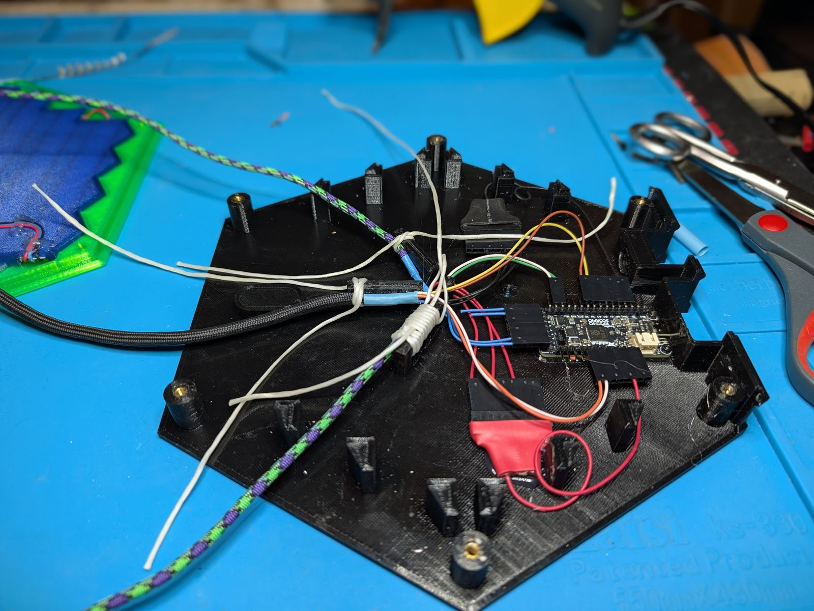
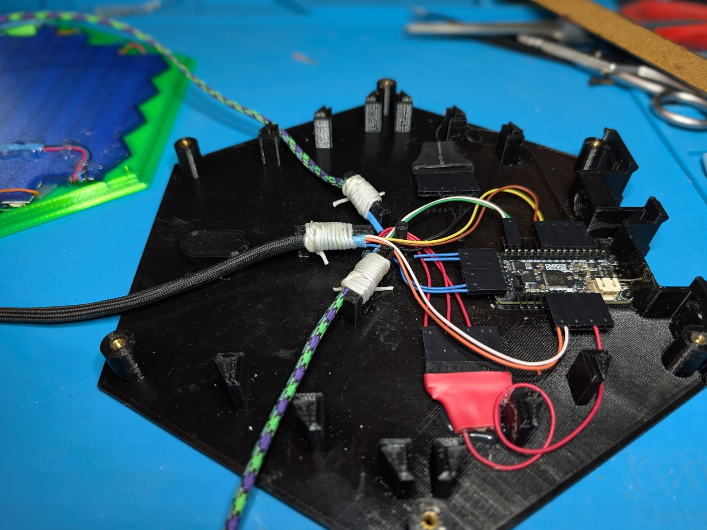
Three tethers lashed to the Base’s three tie-off points: wrapped (left) and trimmed (right).
- Press the slot magnets in: 2 in each slot you’ll use, 1 for the Radio Case’s slot. The back slot’s pair goes into the Base, and the rest go into the Skirt’s outer faces. They’re a press fit, but put a drop of super glue under each one so it can’t come loose. Every unit is tethered to its own slot, so polarity only has to match between a unit and its slot. (The controllers’ and displays’ own magnets are in their steps.)


The back slot’s pair goes into the Base.


The other five slots’ magnets go into the Skirt.
How to make a paracord tether
The tethers are ordinary 22 AWG wires inside a paracord jacket. The paracord makes them tough, flexible, and nice to handle, and it looks a lot better than a bundle of wire. 550 cord takes the Standard Controller’s 7 conductors (snugly), and 325 takes up to 4, which covers a Basic Display or the radio. You don’t need paracord if you have multi-conductor cable: 22 AWG 4- or 8-conductor cable is fine. I used paracord because I had it. For the controllers and the radio, which get pulled out and pushed back in, it adds a bit of wear resistance.
- Cut the cord. Cut the paracord a little longer than you want the tether, and the conductors a good bit longer than that, so you have tails to work with at both ends.
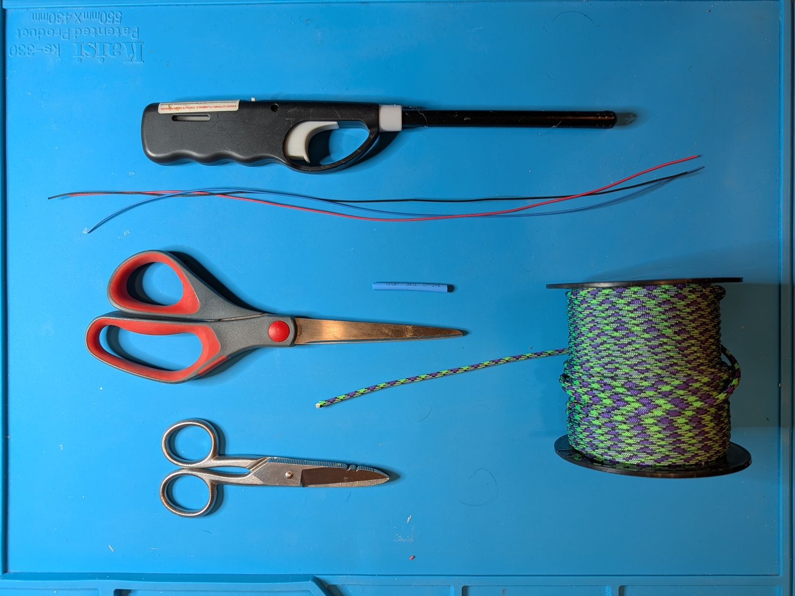
Paracord, the conductors, heat-shrink, scissors, and a lighter for the heat-shrink.
- Gut it. Paracord is a woven sheath around a core of thin strands. Hold the sheath at one end and pull the core strands out of the other. They’ll bunch the sheath up as they go, so work it along a bit at a time.
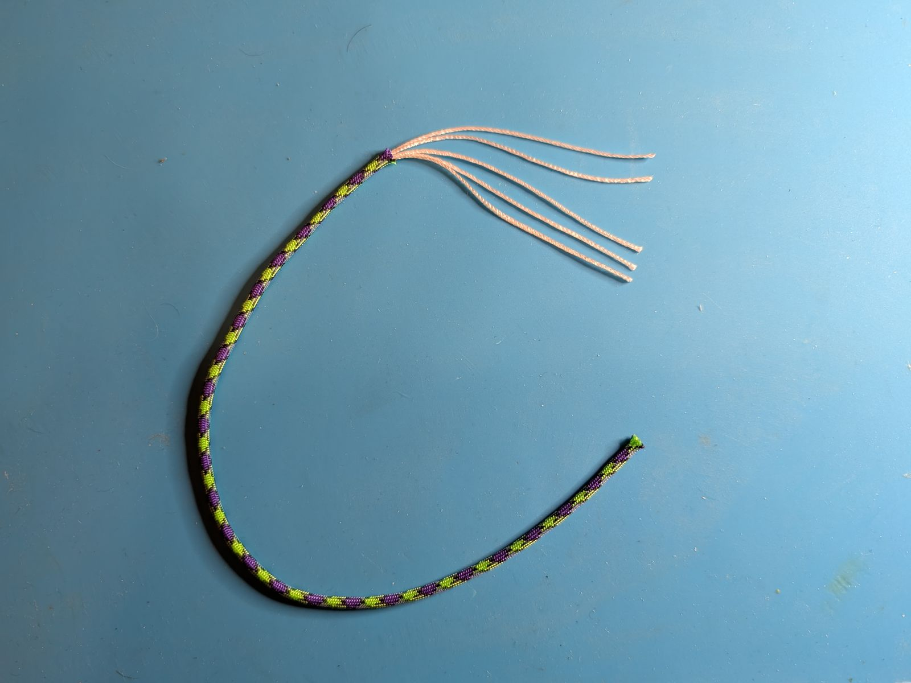
The core strands coming out of the sheath.
- Inchworm it through. The fit is tight, especially 325 with 4 conductors, so don’t try to push or pull the wires through in one go. Push the ends of the conductors a little way into the sheath, bunch the sheath up over them, then hold the wires and smooth the sheath out along them. Repeat, a few centimeters at a time, until the wires come out the other end.
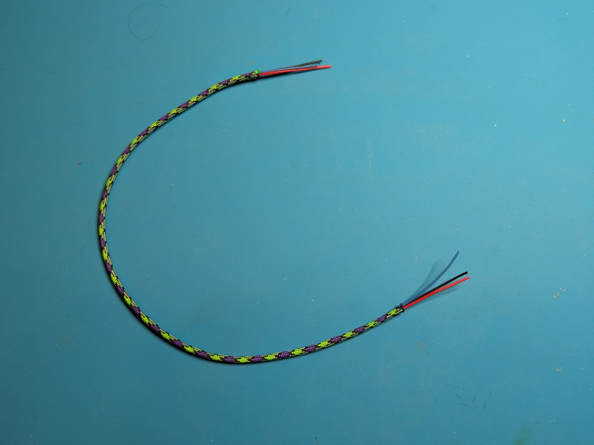
The conductors through the sheath.
- Finish the ends. Paracord frays the moment you cut it. Trim the sheath where you want the tether to end, slide a piece of heat-shrink over the end so it covers the last bit of sheath and the first bit of the wires, and shrink it down. That holds the sheath in place and keeps it from fraying. Do both ends, then strip and terminate the conductors.
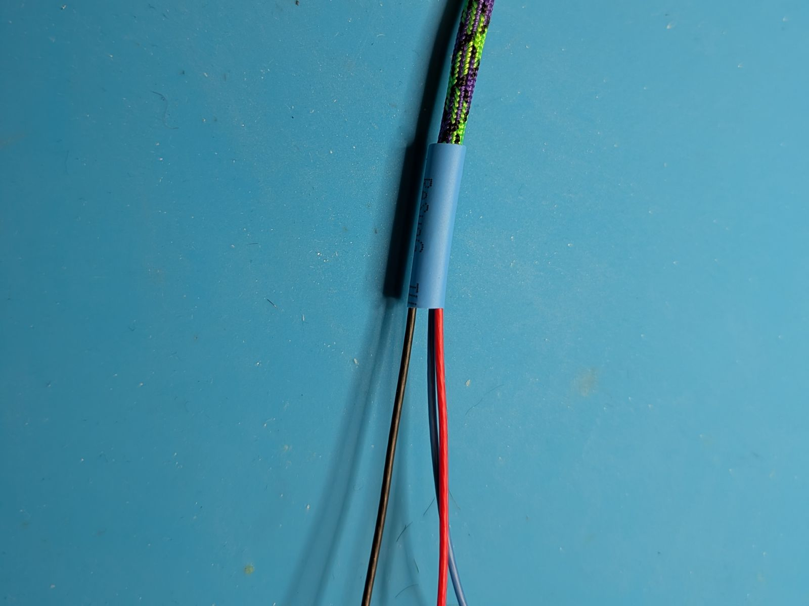
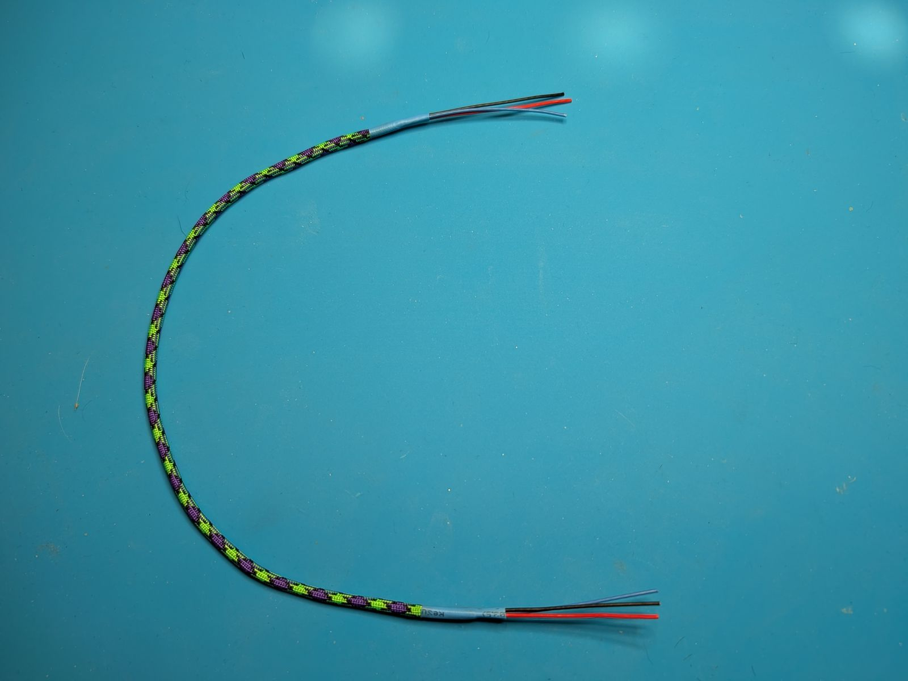
Heat-shrink slid over the end (left), and a finished tether with both ends done (right).
How to tie off the tethers
The tethers are tied down at the Base’s three tie-off points, and each one has a whipping at its unit end that keeps it from pulling out through the case, so a pull on the cord never reaches the solder joints. I used Bell System-style waxed lacing cord, the stuff phone techs have been lacing cable with for a hundred years. It grips, it doesn’t slip, and it never has to come off. A zip tie works too, but lacing is tidier and doesn’t leave a sharp tail.
There are two ties. At the unit end, a common whipping around the tether by itself makes a stop that can’t pull back through the hole. At the Base, a lash binds the tether to a tie-off point.
The whipping (strain relief at the unit end)
- Lay a loop. Lay a loop of lacing cord along the tether, with the loop pointing the way you’ll be wrapping and a short tail sticking out the other end.
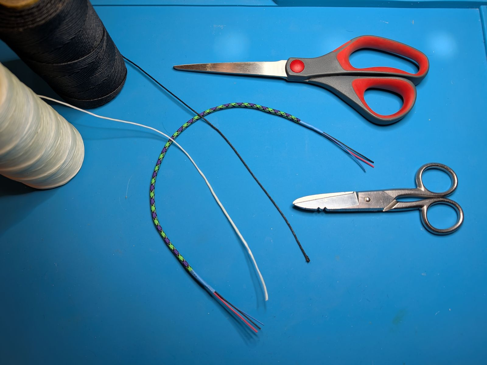
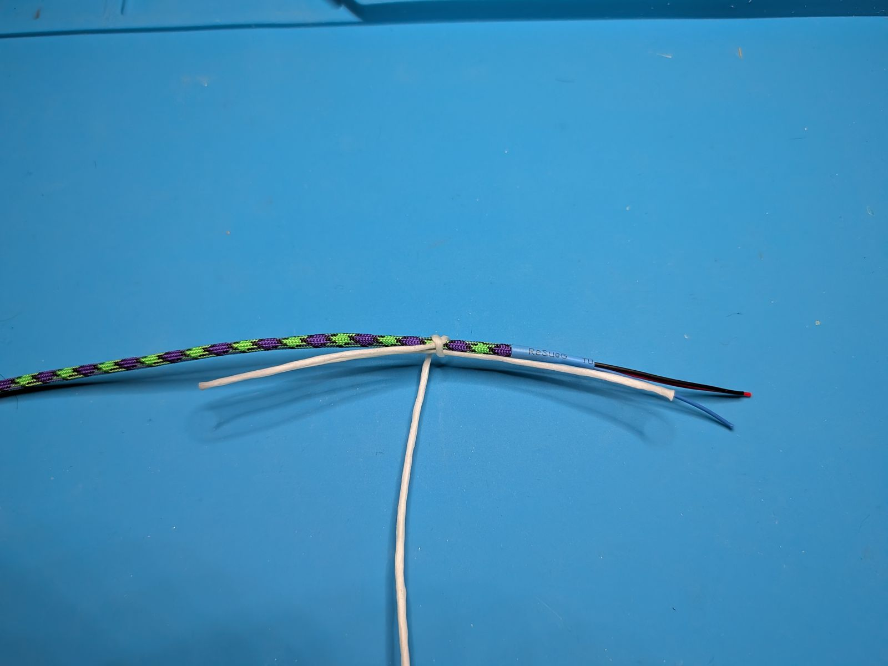
Waxed lacing cord (left), and the loop laid along the tether with the first turn on (right).
- Wrap. Starting at the tail end, wrap the cord around everything, loop included, in tight turns laid side by side. A handful of turns is plenty here; the runs are short and the load is small.
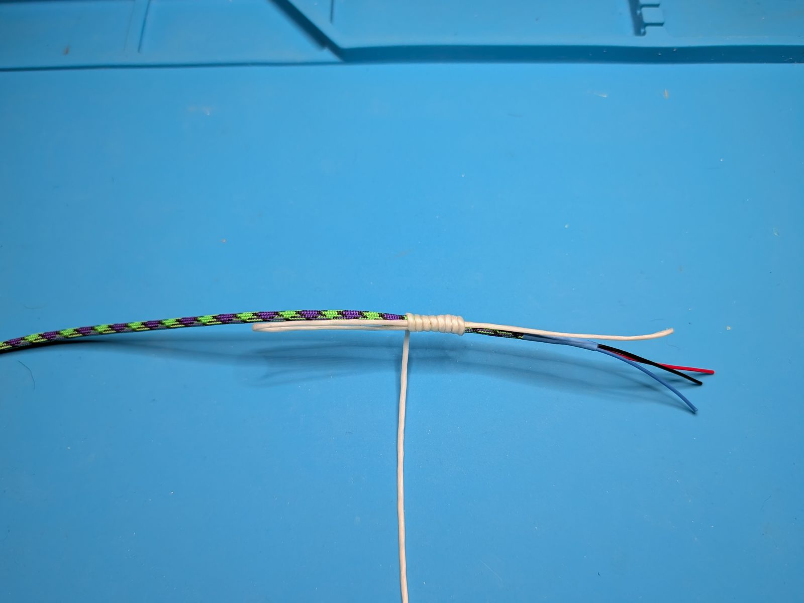
A handful of tight turns.
- Through the loop. Leave the end of the loop sticking out past the last turn, and put the working end through it.
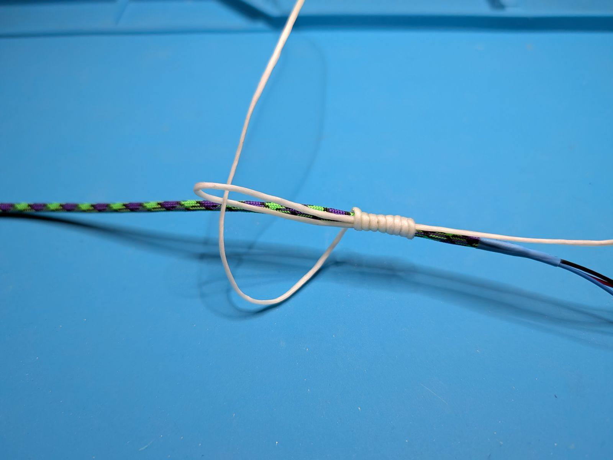
The working end through the loop.
- Pull it under. Pull the tail at the start until the loop, and the working end with it, disappears under the turns. Stop about halfway, so both ends are buried and locked.
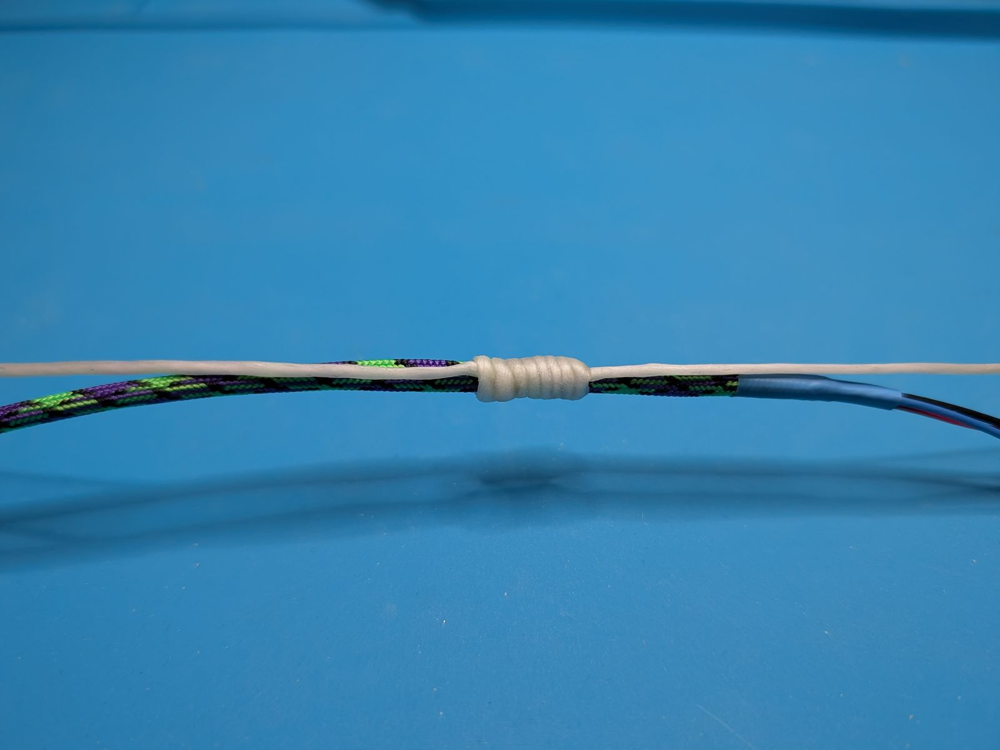
Both ends buried under the turns.
- Trim. Cut both ends off close to the turns.
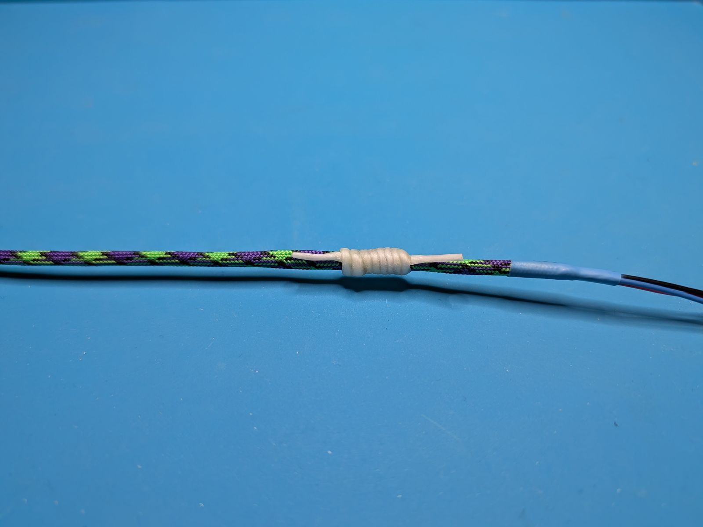
Trimmed. This one is around the tether by itself: the stop that keeps it from pulling out of the case.
The lash (to a tie-off point in the Base; the photos are under Tethers and magnets)
- Clove hitch. Tie a clove hitch around the tether and the tie-off point together.
- Two turns. Wrap two more tight turns around both.
- Lay the loop. Cross the lines and lay a loop along the lash, pointing the way you’ll be wrapping.
- Eight turns. Wrap eight more tight turns over everything, loop included.
- Through the loop. Pass the working end through the loop.
- Pull it all the way through. Pull the far tail until the loop, and the working end with it, comes completely back through the turns.
- Square knot. Cross the ends over again and tie a square knot underneath the lash. Trim the ends.
Wiring
The SCORPIO has 8 LED outputs on the inner pins of the 2 × 8 header on its short end; the outer pins are all ground. All 8 update together, so the whole board refreshes in about 5 ms. Seats are numbered clockwise from the bottom.
Except for 5 V and ground, every pair of wires can go on backwards without hurting anything: the two switches (the button and the encoder’s push switch), the encoder’s two pins, and TX and RX. Swapped switches or encoder pins just work backwards. Swapped TX and RX just won’t talk, so swap them back.
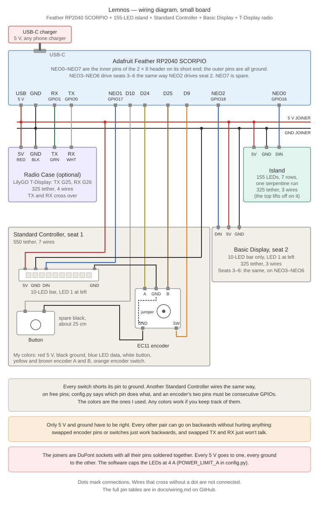
How it all connects. Click it to see it full size.
| Channel | SCORPIO pin | Runs to | LEDs |
|---|---|---|---|
| 0 | NEOPIXEL0 (GPIO16) | Island | 155 |
| 1 | NEOPIXEL1 (GPIO17) | Seat 1 bar (bottom) | 10 |
| 2 | NEOPIXEL2 (GPIO18) | Seat 2 bar (lower left) | 10 |
| 3 | NEOPIXEL3 (GPIO19) | Seat 3 bar (upper left) | 10 |
| 4 | NEOPIXEL4 (GPIO20) | Seat 4 bar (top) | 10 |
| 5 | NEOPIXEL5 (GPIO21) | Seat 5 bar (upper right) | 10 |
| 6 | NEOPIXEL6 (GPIO22) | Seat 6 bar (lower right) | 10 |
- The SCORPIO mounts on its two M2 inserts with two M2 × 4 screws.


The SCORPIO sits in its mount at the back of the Base, USB-C toward the back wall. The wiring isn’t in the model.
- DuPonts. Crimp a DuPont terminal onto each wire that plugs into the SCORPIO or a joiner. The front pair of wings grips the bare wire and the back pair grips the insulation, so strip only enough for the front pair. Then click the terminal into its housing.
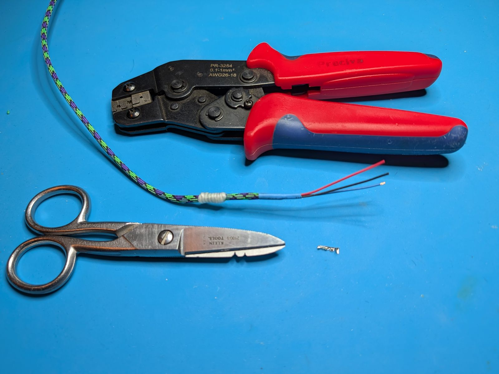
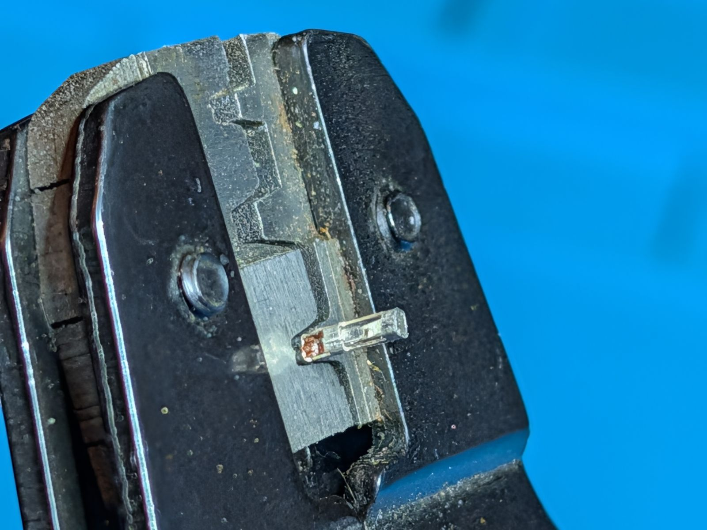
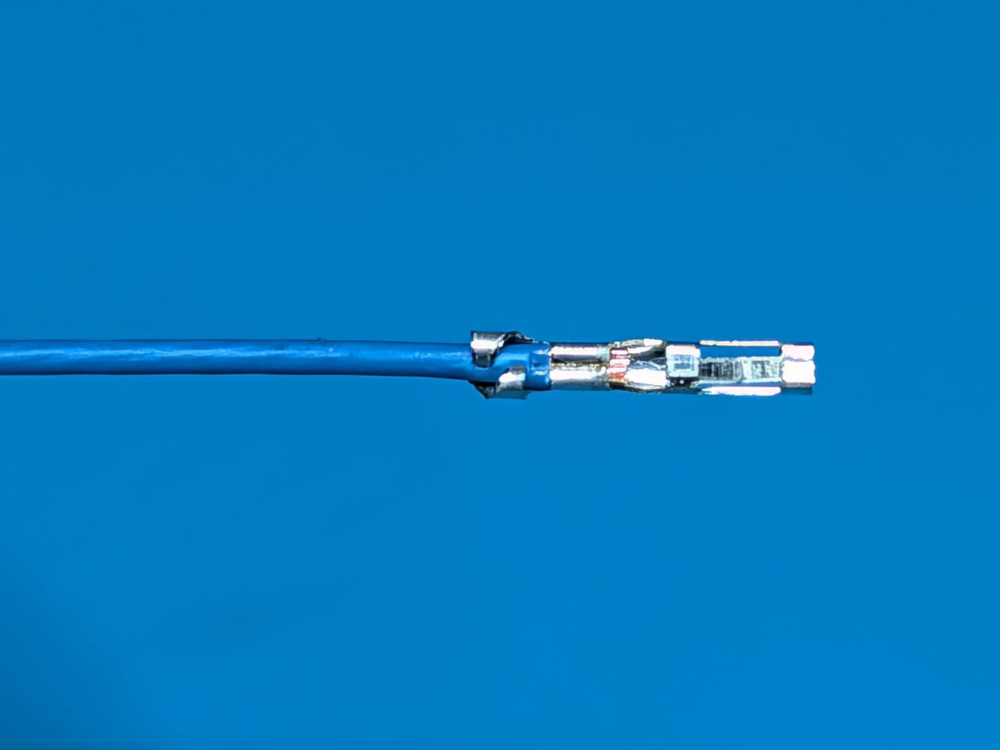
The crimper, a terminal in its die, and a finished crimp.
- LEDs. Island data to channel 0, and each controller or display’s bar to the channel for its seat.
- Controls. The first Standard Controller’s encoder goes to D24 and D25, its push switch to D9, and its button to D10. Further controllers go on free pins; the free inputs table lists them, and
config.pysays which pin does what. Every switch just shorts its pin to ground. An encoder’s two pins have to be consecutive GPIOs. - Power. 5 V and ground to every strip, controller, and display through your power distribution, with all the grounds tied together.
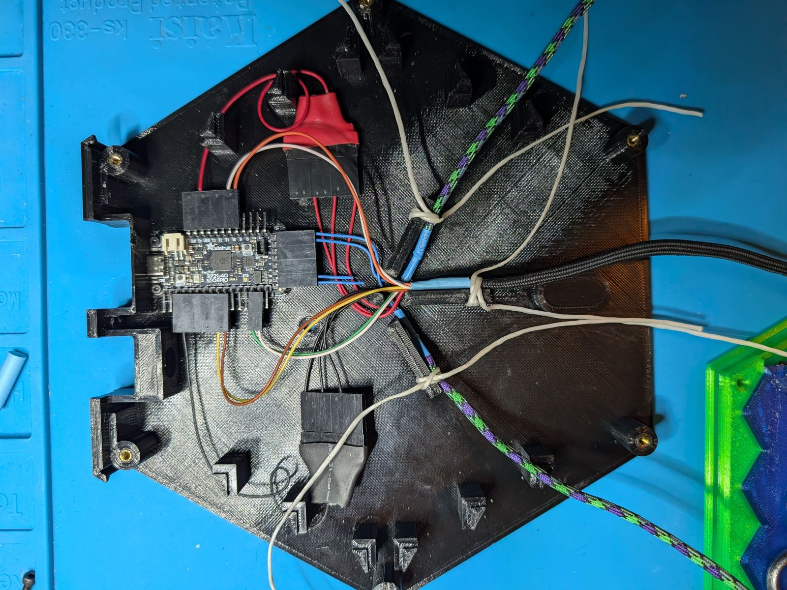
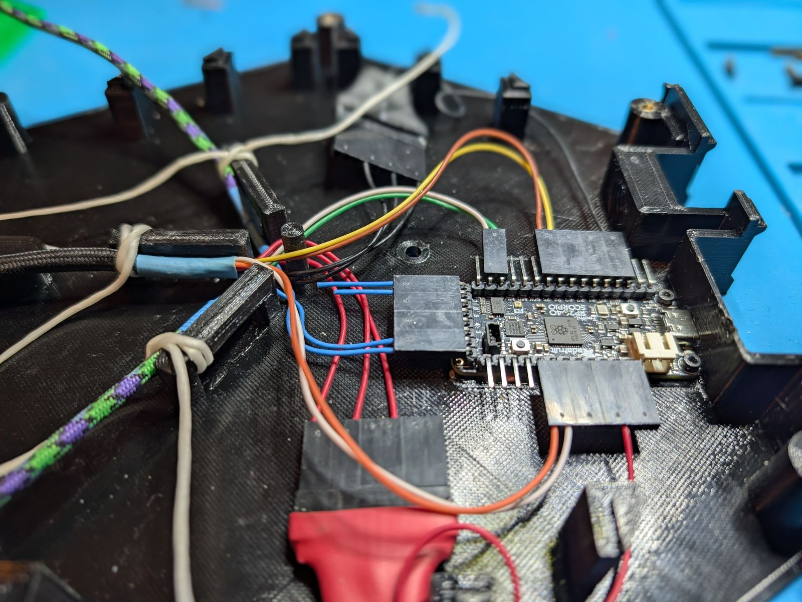
Everything plugged in. Each wire goes to the SCORPIO or a joiner on a DuPont, and the 5 V joiner is the one in red heat-shrink.
Radio (optional)
- Heat-set the M3 insert into the right side of the Radio Case Body.


The insert goes into the right side of the Body.
- The tether’s four wires go to the radio’s 5 V, ground, TX, and RX (mine are red, black, green for TX, and white for RX). TX and RX cross over: the radio’s TX goes to the SCORPIO’s RX, and its RX to the SCORPIO’s TX. On the T-Display that’s G25 (TX) and G26 (RX); on a DevKit or NodeMCU-32S it’s GPIO17 and GPIO16.
- 5 V from the board’s supply to its 5V pin (VIN on most other ESP32 boards). The radio firmware and its setup are in the radio README.
- The T-Display goes in the Radio Case, then the Endcap goes on the right side with an M3 × 8.


The Endcap and its screw both come straight in from the right. The T-Display isn’t in the model.
- Or mount any other ESP32 inside the board. If yours needs a pairing button, run it to the power jack hole in the back or to the Skirt.
Closing it up
- Put the Skirt on first. It doesn’t touch the Base, the carrier, or the wiring, and most of the slot magnets are in it.
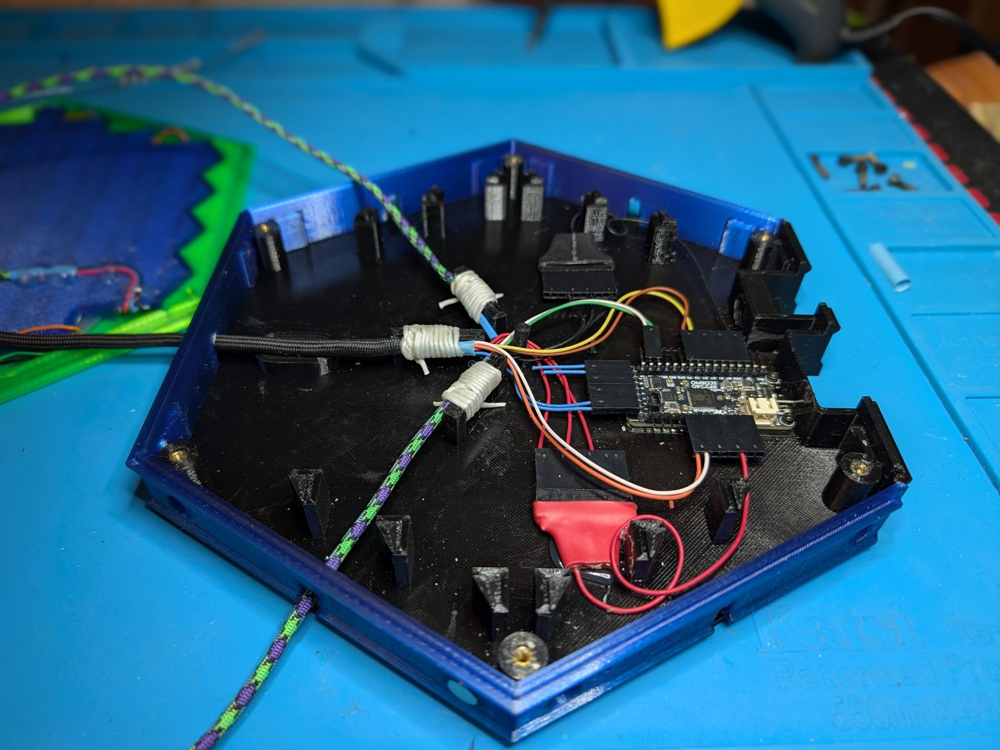
The Skirt on, before the Strip Carrier goes in.
- Seat the controllers and the Radio Case in their slots for the first time now, before the top goes on, so you can see where their cables end up inside and guide them so nothing gets pinched.
- Set the Strip Carrier with its LEDs in the Base. It stays on its tether, so it can come back out without unplugging anything.


The carrier sits on top of the Base, over the SCORPIO and the wiring.
- Set the 37 Tiles in the carrier. They just sit in place.


One Tile per hex. Clear PETG, so they mostly disappear in the render.
- The Cover holds the Tiles and the Skirt in place. Set it on, and before you put all the screws in and button it up, power the board and run the test pattern (set
GAME = "testpattern"inconfig.py; see Software). Red, green, and blue fill every LED in order, so a wiring problem shows up while the top is still easy to take off.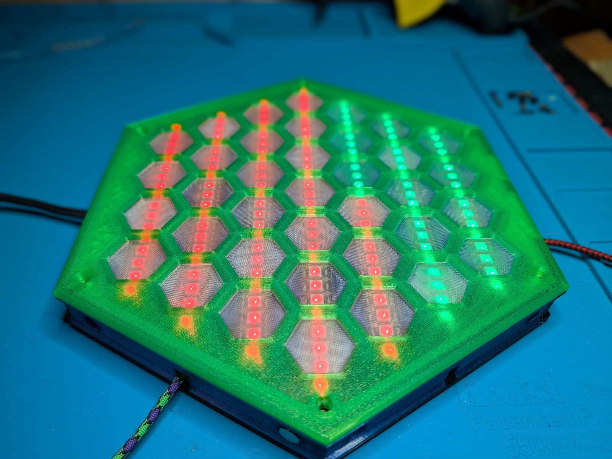
The test pattern partway through, with the Cover on and the screws not in yet.
- Once it all lights, screw the Cover down with the 6 M3 screws into the Base’s risers.


The Skirt goes around the edge, the Cover goes over everything, and the six screws go down into the risers.
Software
- Install CircuitPython 10 on the SCORPIO and the three libraries, then copy the board files over, as described in the CircuitPython README.
- In
config.py, setISLAND_STARTto the corner where your island’s data goes in, and list your controllers. - Set
GAME = "testpattern"and power up. It lights every LED in order, so a row that’s backwards or a bar on the wrong channel shows up right away. Then set it back.
Playing
- Power: plug USB-C into the SCORPIO. The board starts the last game it was set to.
- Joining: press pick to join. Move steps through the choices and pick takes one: in Island Rush, your corner and then your color. The first player to join also sets how many play, and the computer plays every seat nobody takes. Then their bar breathes green, and pick starts the game.
- When it’s over: pick plays again with the same choices.
- Changing games: with nobody joined, back opens the game picker. During a game, hold a wired switch for 3 seconds: your bar turns green with one red light, and picking the red light leaves the game. Picking green, pressing back, or waiting 30 seconds goes back to the game.
- Brightness: it starts at 10%. Change it from the USB page (
Lemnos.htmlon the board’s drive) or, with the radio, from its web page. The board remembers it through power-off. - Rules: Island Rush’s full rules are on GitHub.
Files
The STEP model, the Fusion archive, the print files, and the print profile are on MakerWorld; the board software, radio firmware, and docs are on GitHub. Hardware and docs are CC BY-SA and software is MIT, so remix away, and tell me what you build, break, or improve.
Get the files on MakerWorld → View on GitHub